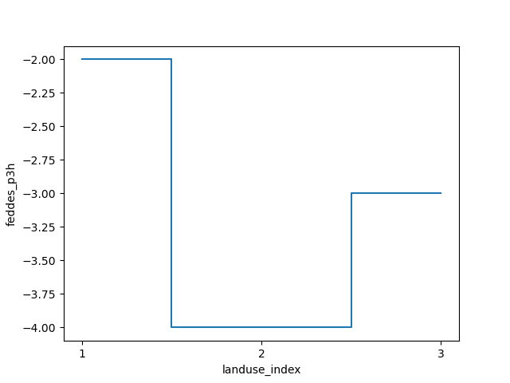
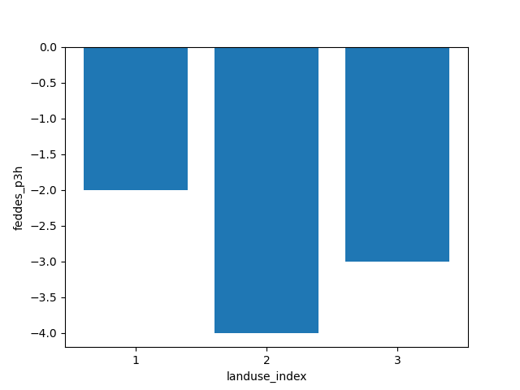

Note
Go to the end to download the full example code.
Reading existing MetaSWAP input#
iMOD Python currently has no support for reading entire MetaSWAP models, however reading individual .inp files into a pandas DataFrame is possible.
This is especially handy for reusing previously made lookup tables, e.g. LanduseOptions (luse_svat.inp) or AnnualGrowthFactors (fact_svat.inp).
We’ll start with the usual imports:
import os
import pandas as pd
import xarray as xr
import imod
Creating an example file#
For this example we’ll first have to create a file which we are going to read. You might already have such a file at hand from an existing model. In that case you can skip this step.
vegetation_index = [1, 2, 3]
names = ["grassland", "maize", "potatoes"]
landuse_index = [1, 2, 3]
coords = {"landuse_index": landuse_index}
landuse_names = xr.DataArray(data=names, coords=coords, dims=("landuse_index",))
vegetation_index_da = xr.DataArray(
data=vegetation_index, coords=coords, dims=("landuse_index",)
)
# Because there are a lot of parameters to define, we'll create a DataArray of
# ones (``lu``) to more easily broadcast all the different parameters.
lu = xr.ones_like(vegetation_index_da, dtype=float)
landuse_options = imod.msw.LanduseOptions(
landuse_name=landuse_names,
vegetation_index=vegetation_index_da,
jarvis_o2_stress=xr.ones_like(lu),
jarvis_drought_stress=xr.ones_like(lu),
feddes_p1=xr.full_like(lu, 99.0),
feddes_p2=xr.full_like(lu, 99.0),
feddes_p3h=lu * [-2.0, -4.0, -3.0],
feddes_p3l=lu * [-8.0, -5.0, -5.0],
feddes_p4=lu * [-80.0, -100.0, -100.0],
feddes_t3h=xr.full_like(lu, 5.0),
feddes_t3l=xr.full_like(lu, 1.0),
threshold_sprinkling=lu * [-8.0, -5.0, -5.0],
fraction_evaporated_sprinkling=xr.full_like(lu, 0.05),
gift=xr.full_like(lu, 20.0),
gift_duration=xr.full_like(lu, 0.25),
rotational_period=lu * [10, 7, 7],
start_sprinkling_season=lu * [120, 180, 150],
end_sprinkling_season=lu * [230, 230, 240],
interception_option=xr.ones_like(lu, dtype=int),
interception_capacity_per_LAI=xr.zeros_like(lu),
interception_intercept=xr.ones_like(lu),
)
Just to create an example file, we’ll write landuse_options into a luse_svat.inp file in a temporary directory
directory = imod.util.temporary_directory()
os.makedirs(directory)
landuse_options.write(directory, None, None, None, None)
Reading the .inp file#
We’ll construct the path to the luse_svat.inp file first
input_file = directory / "luse_svat.inp"
iMOD Python has a fixed_format_parser to parse MetaSWAP’s .inp files.
This requires the file path and a metadata_dict, which is stored in the
package. You can access it by calling <pkg>._metadata_dict. This function
returns stores your data in a dictionary.
from imod.msw.fixed_format import fixed_format_parser
# Store the pkg in this variable for brevity
pkg = imod.msw.LanduseOptions
parsed = fixed_format_parser(input_file, pkg._metadata_dict)
parsed
{'landuse_index': [1, 2, 3], 'landuse_name': ['grassland ', 'maize ', 'potatoes '], 'vegetation_index': [1, 2, 3], 'jarvis_o2_stress': [1.0, 1.0, 1.0], 'jarvis_drought_stress': [1.0, 1.0, 1.0], 'feddes_p1': [99.0, 99.0, 99.0], 'feddes_p2': [99.0, 99.0, 99.0], 'feddes_p3h': [-2.0, -4.0, -3.0], 'feddes_p3l': [-8.0, -5.0, -5.0], 'feddes_p4': [-80.0, -100.0, -100.0], 'feddes_t3h': [5.0, 5.0, 5.0], 'feddes_t3l': [1.0, 1.0, 1.0], 'threshold_sprinkling': [-8.0, -5.0, -5.0], 'fraction_evaporated_sprinkling': [0.05, 0.05, 0.05], 'gift': [20.0, 20.0, 20.0], 'gift_duration': [0.25, 0.25, 0.25], 'rotational_period': [10.0, 7.0, 7.0], 'start_sprinkling_season': [120.0, 180.0, 150.0], 'end_sprinkling_season': [230.0, 230.0, 240.0], 'albedo': [' ', ' ', ' '], 'rsc': [' ', ' ', ' '], 'rsw': [' ', ' ', ' '], 'rsoil': [' ', ' ', ' '], 'kdif': [' ', ' ', ' '], 'kdir': [' ', ' ', ' '], 'interception_option': [1, 1, 1], 'interception_capacity_per_LAI_Rutter': [0.0, 0.0, 0.0], 'interception_intercept': [1.0, 1.0, 1.0], 'interception_capacity_per_LAI_VonHoyningen': [0.0, 0.0, 0.0], 'pfree': [' ', ' ', ' '], 'pstem': [' ', ' ', ' '], 'scanopy': [' ', ' ', ' '], 'avprec': [' ', ' ', ' '], 'avevap': [' ', ' ', ' '], 'saltmax': [' ', ' ', ' '], 'saltslope': [' ', ' ', ' ']}
You can easily convert this to a pandas DataFrame as follows:
df = pd.DataFrame(parsed)
df
We can set landuse_index as the index:
df = df.set_index("landuse_index")
df
This DataFrame can consequently be converted to a xarray Dataset
ds = xr.Dataset.from_dataframe(df)
ds
Not all variables contain data, these are variables which are not supported by iMOD Python, for example this parameter:
ds["albedo"]
We use some basic xarray plotting functionality to get a general idea of data for each landuse index
xticks = ds.coords["landuse_index"]
ds["feddes_p3h"].plot.step(where="mid", xticks=xticks)

[<matplotlib.lines.Line2D object at 0x000001466DA98050>]
It is better to plot ordinal data on a bar chart. So in this case, we can use matplotlib’s bar function.
import matplotlib.pyplot as plt
plt.bar(xticks, ds["feddes_p3h"].values)
plt.xticks(xticks)
plt.xlabel("landuse_index")
plt.ylabel("feddes_p3h")

Text(30.972222222222214, 0.5, 'feddes_p3h')
Total running time of the script: (0 minutes 0.295 seconds)